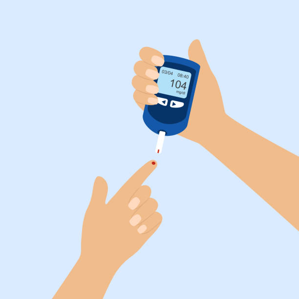
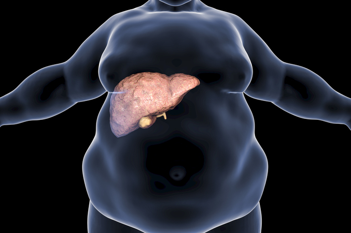

- Doenças Cardiovasculares: Aumento do risco de hipertensão, colesterol alto (dislipidemias), doenças coronarianas e insuficiência cardíaca.
-
Diabetes Tipo 2: A obesidade é um fator de risco importante para o desenvolvimento dessa condição metabólica.

-
Problemas Articulares: A pressão excessiva sobre as articulações, especialmente joelhos e quadris, pode levar ao desgaste rápido, causando dores e osteoartrite.
-
Doenças do Fígado: A esteatose hepática ("fígado gordo") é uma complicação comum, podendo evoluir para cirrose em alguns casos.

-
Apneia do Sono: O acúmulo de gordura nas vias aéreas dificulta a passagem do ar, causando interrupções na respiração durante o sono.
-
Câncer: A obesidade eleva o risco de desenvolvimento de alguns tipos de câncer, como de mama e colorretal.
-
Problemas Psiquiátricos: Há uma maior propensão a desenvolver transtornos como ansiedade e depressão.
-
Doenças Respiratórias: Além da apneia do sono, a obesidade pode agravar outras condições respiratórias.